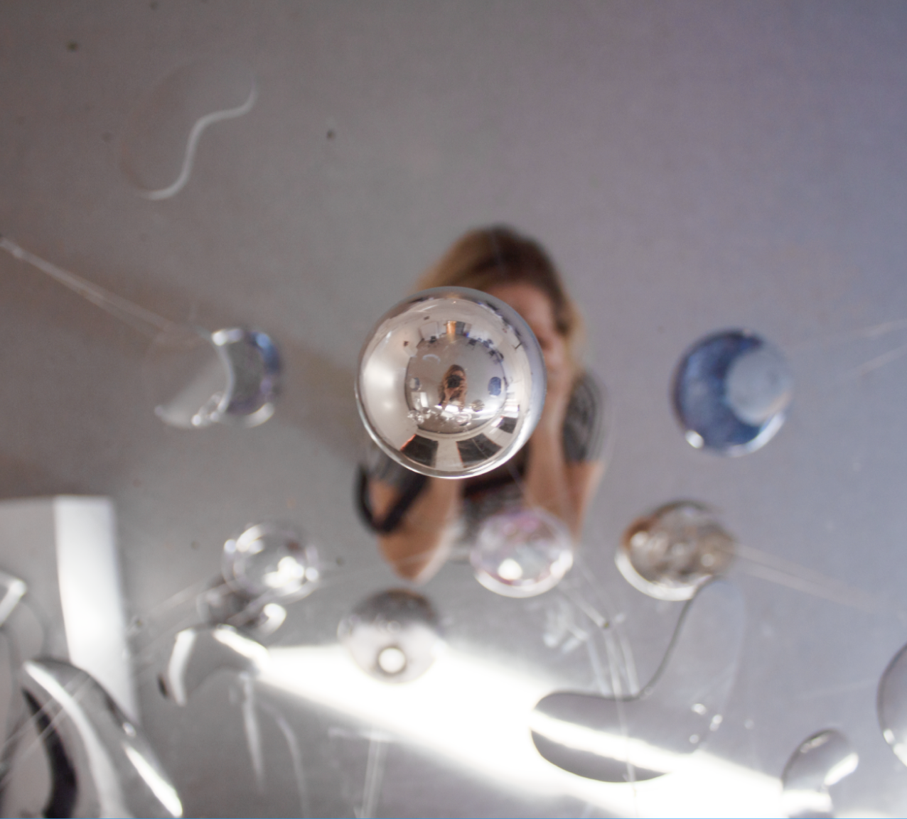

Tara Lynch
About
Portfolio
Contact
I’m Tara Lynch, a glass artist creating works with a focus on human forms and sensory experiences in nature. I am curious about the way people view themselves mirrored and how distortion affects a person's perceived surroundings. By experimenting with the optics of glass, my pieces warp the viewer's perspective of space and themselves.
